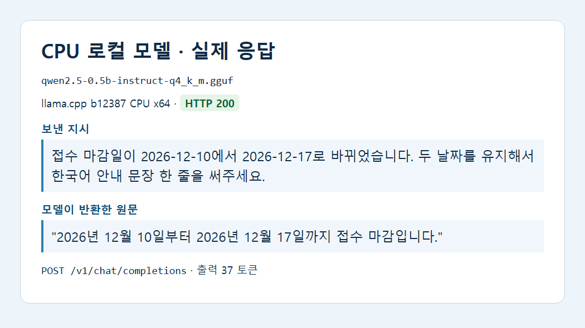

Qwen2.5 0.5B Instruct
약 491 MB · Apache 2.0
세 후보 중 다운로드 파일이 가장 작습니다. 짧은 지시를 한 번 보내고 첫 응답을 받을 때 쓰기 좋습니다.
선택 실습 · CPU 로컬 모델
Hugging Face에서 모델 파일을 받고, llama.cpp로 열어서 응답을 받습니다. 이전과 같은 입력을 써서 날짜와 형식을 지켰는지 비교합니다.
모델 파일에는 학습을 거쳐 얻은 가중치와 실행에 필요한 정보가 들어 있습니다. 실행기는 이 파일을 열어 입력을 토큰으로 바꾸고 CPU에서 답을 계산합니다. 아래 크기는 Hugging Face의 Q4_K_M 파일 기준이며, 실행할 때에는 파일 크기 외에 작업 메모리도 필요합니다.
약 491 MB · Apache 2.0
세 후보 중 다운로드 파일이 가장 작습니다. 짧은 지시를 한 번 보내고 첫 응답을 받을 때 쓰기 좋습니다.
약 1.12 GB · Apache 2.0
같은 Qwen 계열에서 가중치 수가 더 많은 모델입니다. 0.5B와 같은 질문으로 한국어 지시와 출력 형식을 얼마나 잘 지키는지 비교합니다.
약 806 MB · Gemma 이용 조건
Google의 지시형 모델입니다. 같은 입력을 다른 모델 계열에도 주고, 응답 시간과 원문 보존을 비교할 수 있습니다.
.gguf로 끝나는지 확인합니다. GGUF는 가중치를 담는 파일 형식이고 Q4_K_M은 적은 메모리에 담을 수 있게 가중치의 표현 정밀도를 줄인 방식 중 하나입니다.llama-b12387-bin-win-cpu-x64.zip을 받습니다. ARM PC에서는 arm64를 선택합니다. Windows 설정 → 시스템 → 정보에서 시스템 종류를 확인할 수 있습니다.llama-server.exe와 받은 .gguf 파일이 보이는 폴더에서 탐색기 주소 표시줄에 powershell을 입력합니다.
.gguf 이름을 확인합니다.True이고 다음 줄에서 받은 모델 파일명이 보이는지 확인합니다.
Test-Path .\llama-server.exe
Get-ChildItem -File *.gguf$modelFile = '.\qwen2.5-0.5b-instruct-q4_k_m.gguf'
.\llama-server.exe -m $modelFile --host 127.0.0.1 --port 8081 -ngl 0 -c 2048 -t 4-ngl 0은 GPU에 올릴 모델 레이어를 0으로 두고, -c 2048은 이 실습의 문맥 크기, -t 4는 CPU 스레드 설정입니다.
127.0.0.1은 내 PC를 가리킵니다. 모델을 바꾸거나 종료할 때는 실행한 PowerShell 창에서 Ctrl+C를 누릅니다.
첫 질문 · “접수 마감일이 2026-12-10에서 2026-12-17로 바뀌었습니다. 두 날짜를 유지해서 한국어 안내 문장 한 줄을 써주세요.”
PowerShell에 모델을 찾을 수 없다는 메시지가 있는지 먼저 봅니다. 모델 이름과 확장자를 Get-ChildItem 출력과 대조합니다. 포트가 이미 사용 중이면 명령의 --port 번호와 브라우저 주소의 번호를 함께 바꿉니다.
서버가 응답하면 연결은 성공입니다. 문장이 한국어 한 줄인지와 두 날짜가 그대로 들어갔는지는 원문을 보고 확인합니다.
| 확인 항목 | 내가 볼 것 |
|---|---|
| 조건 유지 | 한국어 한 문장인지 확인합니다. |
| 원문 근거 | 두 날짜가 바뀐 내용을 전달하고 있는지 확인합니다. 마감일 변경과 접수 기간은 의미가 다릅니다. |
| 실행 시간 | 같은 입력을 보낸 뒤 첫 글자가 나타날 때와 완료된 때를 적습니다. |
한 모델로도 먼저 바꿔볼 수 있습니다. 같은 날짜를 두고 기존 날짜와 변경 날짜를 각각 그대로 쓰세요.
를 추가해 다시 실행한 뒤 두 답을 비교합니다.

지금 한 일은 추론과 설정입니다. 이미 배운 가중치로 응답을 만드는 것을 추론이라고 합니다. 지시문이나 예시를 고치면 이번 입력의 맥락이 달라집니다. 학습으로 맞춤화하는 경우에는 예시 데이터에 맞춰 가중치나 추가 어댑터를 업데이트합니다.
브라우저에서 응답을 받은 다음, 서버를 그대로 켜두고 두 번째 PowerShell 창에서 실행합니다. 모델 단계가 받는 messages와 응답에서 읽을 content가 어디에 있는지 확인합니다.
$modelRequest = @{
messages = @(@{
role = 'user'
content = '접수 마감일이 2026-12-10에서 2026-12-17로 바뀌었습니다. 두 날짜를 유지해서 한국어 안내 문장 한 줄을 써주세요.'
})
temperature = 0
max_tokens = 80
} | ConvertTo-Json -Depth 5
$utf8Body = [System.Text.Encoding]::UTF8.GetBytes($modelRequest)
$reply = Invoke-RestMethod -Method Post -Uri 'http://127.0.0.1:8081/v1/chat/completions' -ContentType 'application/json; charset=utf-8' -Body $utf8Body -TimeoutSec 120
$reply.choices[0].message.content내 도구에 적용할 때 · 앞 단계가 확인한 값을 요청의 content에 넣고 응답 문장을 받아 결과 검사로 넘깁니다. 서버가 멈추거나 응답이 비어 있으면 호출 단계에 오류를 남기고, 이미 확인한 비교값은 보관합니다.